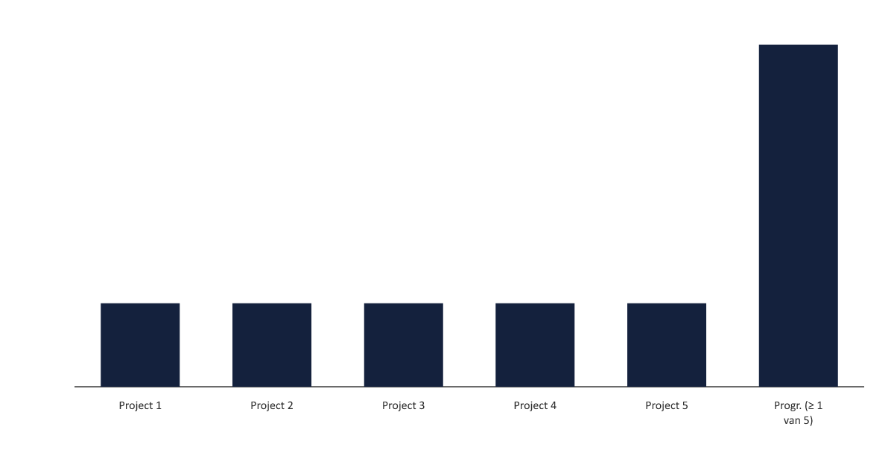
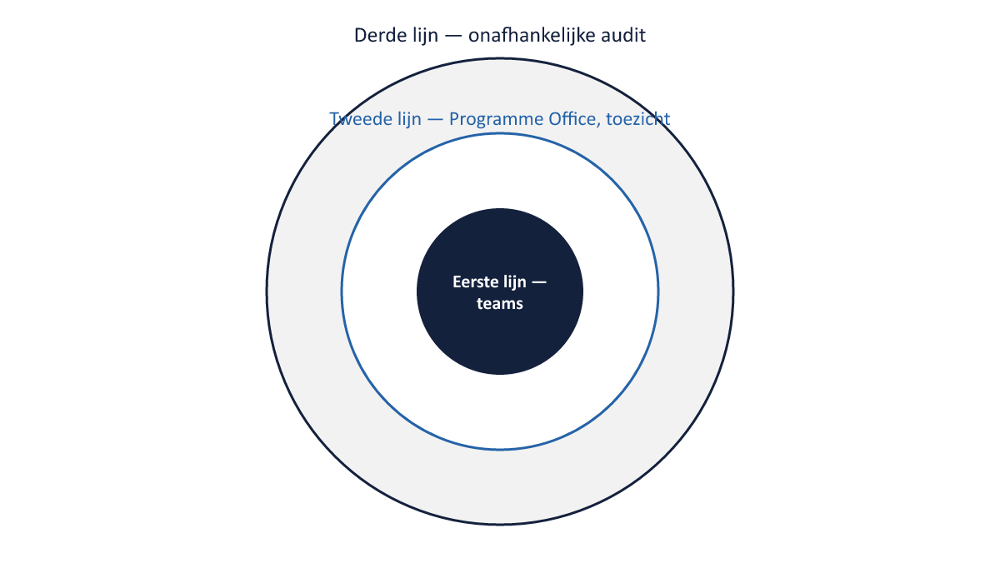

Sheet 1Titel
Project- en Programmamanagement
Niveau 2 · Deel 18: Risico’s en issues over grenzen
Sheet 2Bewuste afbakening
Wat verandert er als risico’s/issues project- en programmagrenzen overstijgen
Geen kwantitatieve modellering — verwijzing naar aparte cursus Risicomanagement
Sheet 3Geaggregeerd risico
Klein risico per project → groter risico op programmaniveau
Vooral bij onderling afhankelijke projecten (deel 17)

Sheet 4Cross-project issues
Een issue in project A raakt project B
Escaleert naar de Programme Board — niet af te handelen door één projectmanager
Sheet 5Escalatielogica herhaald
Niveau 1: projectmanager → eigen stuurgroep
Niveau 2: projectmanager → Programme Board
Sheet 6Assurance: drie verdedigingslinies

Eerste: projectteams zelf
Tweede: Programme Office — toezicht, geen uitvoering
Derde: onafhankelijke audit
Sheet 7Waarom drie lijnen
Voorkomt dat assurance wordt gedaan door wie het zelf uitvoert
Vergelijkbaar met Project Assurance-regel uit niveau 1
Sheet 8Decisions
Besluitvorming traceerbaar en op het juiste niveau
Niet iedereen overal over, niet alles naar de sponsoring group
Sheet 9Risicobereidheid: programma vs. project
Een programma kan meer of minder risico accepteren dan de som van zijn projecten
Vastgesteld door de sponsoring group
Sheet 10Toegepast: Programma Mutatieplatform
Geaggregeerd risico periodiek herbeoordeeld
Cross-project issue: kernsysteemkoppeling → escalatie
Bewuste risico-acceptatie op WGP 2.0’s opleverdatum
Sheet 11Vooruitblik
Deel 19: stakeholders, macht en politiek — IPMA-C-gedragscompetenties